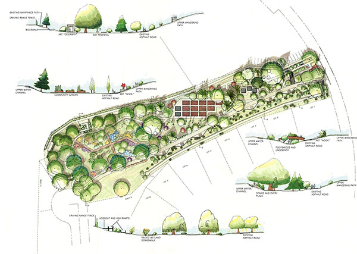

ARBORETUM DE LOUPESSAC
Il couvre 200 hectares de superficie. Il contient actuellement 2 700 espèces et variétés, mais on prévoit d'ici les prochaines années d'en regrouper plus de 3 000.
Il est divisé en plusieurs zones:

* La zone systématique, où les végétaux sont regroupés selon leurs parentés botaniques. Cette zone correspond en partie aux plus anciennes plantations, c'est à dire la zone accessible au public.
* La zone géographique (Asie, Amérique, Europe), qui couvre la plus grande partie de l'Arboretum Les arbres y sont regroupés en fonction de leurs origines géographiques. Elle est constituée de jeunes sujets plantés depuis 1960. Chaque
espèce est représenté par un groupe de 6 individus.
* La zone horticole, située au centre. Elle présente des arbres qui n'existent pas dans la nature, hybrides et variétés horticoles issus de sélections faites par l'homme.
* Les pépinières, consacrées à l'élevage des jeunes arbres à partir des graines, avant leur plantation définitive dans l'Arboretum.